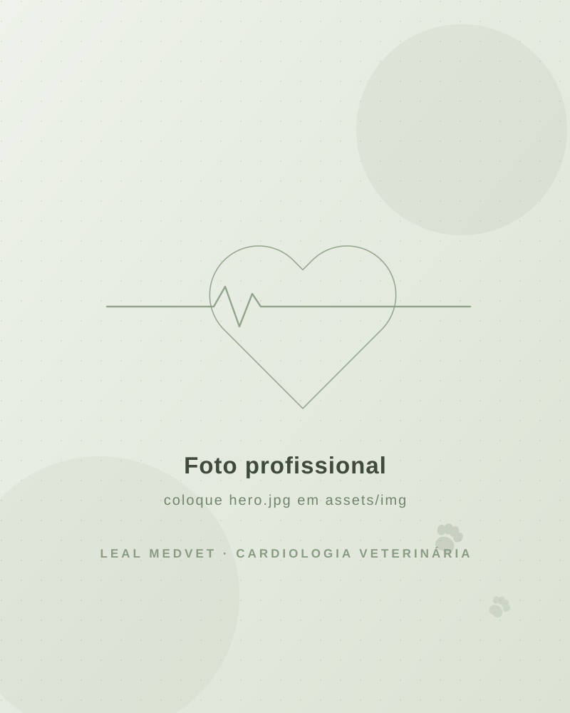
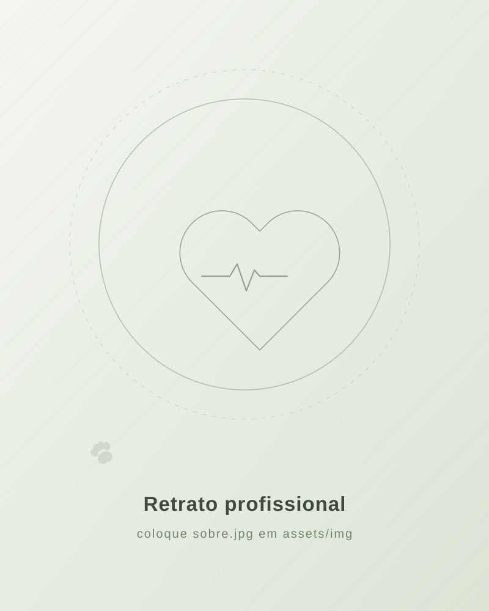

Consulta cardiológica
Avaliação clínica detalhada, com histórico completo e exame físico cuidadoso do paciente.
Especialista em saúde cardiovascular animal, com atendimento personalizado, acompanhamento contínuo e foco no diagnóstico precoce.
Atendimento especializado em cardiologia veterinária


Perfil Profissional
Com pós-graduação em Cardiologia Veterinária pela Anclivepa, atuo no diagnóstico e no tratamento de doenças cardíacas, com foco em atendimento humanizado e acompanhamento contínuo de cada paciente.
Formação especializada pela Anclivepa, com atualização constante.
Atuação dedicada às doenças cardíacas em cães e gatos.
Cuidado individualizado e orientação clara aos tutores.
Compromisso com o cuidado contínuo e a longevidade do seu pet.
Serviços
Avaliação completa e acompanhamento próximo, do diagnóstico ao tratamento.
Avaliação clínica detalhada, com histórico completo e exame físico cuidadoso do paciente.
Análise do ritmo e da condução elétrica do coração do seu pet.
Avaliação por imagem da estrutura e da função cardíaca.
Estudo do fluxo sanguíneo e identificação de alterações valvares.
Acompanhamento da pressão arterial e da função cardíaca ao longo do tratamento.
Leitura dos exames e orientação para tratamentos específicos.
Atuação conforme os serviços descritos em documento profissional.
Diagnóstico
Cada avaliação é conduzida com atenção aos detalhes, para entender o coração do seu pet por completo e definir o melhor caminho de cuidado.
Diferenciais
Formação e capacitação voltadas à cardiologia veterinária.
Avaliação detalhada para auxiliar na identificação de alterações cardiovasculares.
Cuidado individualizado para o paciente e orientação clara aos tutores.
Acompanhamento e orientação para melhores resultados no cuidado cardiovascular.
Atendimento
Mais comodidade para você e cuidado para o seu pet.
Agende uma avaliação cardiológica e conte com um atendimento especializado e personalizado.
Agendar consulta pelo WhatsAppContato
Agende sua consulta ou tire dúvidas sobre o atendimento cardiológico do seu pet. O agendamento é feito pelo WhatsApp, com retorno rápido e personalizado.